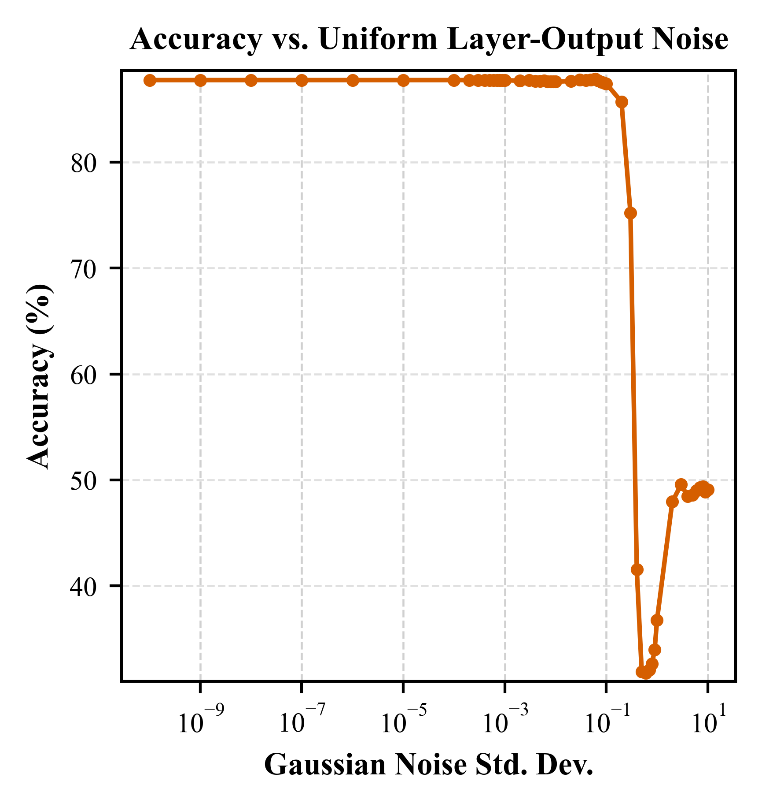
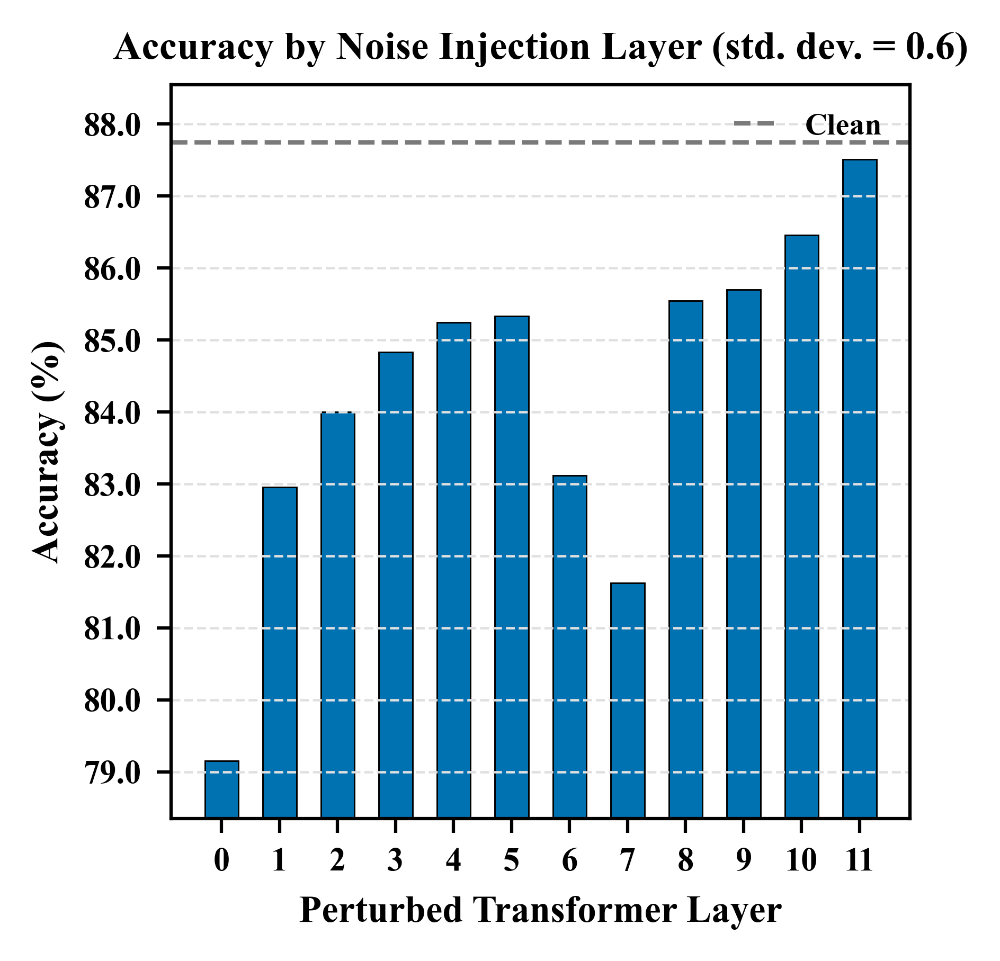

BERT-base MRPC Accuracy Under Layer-Output Gaussian Noise
87.7%
Clean baseline accuracy
52
Noise magnitudes in the line sweep
10.0
Maximum line-sweep standard deviation
0.6
Single-layer bar-chart standard deviation

Gaussian Noise Std. Dev.

Perturbed Transformer Layer
Selected Noise Magnitudes
| Sigma | Accuracy (%) |
|---|---|
| 1e-10 | 87.7 |
| 1e-3 | 87.7 |
| 0.1 | 87.4 |
| 0.2 | 85.7 |
| 0.4 | 41.6 |
| 0.6 | 31.8 |
| 1.0 | 36.8 |
| 10.0 | 49.1 |
Single-Layer Noise at Sigma = 0.6
| Layer | Accuracy (%) |
|---|---|
| 0 | 79.2 |
| 1 | 83.0 |
| 2 | 84.0 |
| 3 | 84.8 |
| 4 | 85.2 |
| 5 | 85.3 |
| 6 | 83.1 |
| 7 | 81.6 |
| 8 | 85.5 |
| 9 | 85.7 |
| 10 | 86.5 |
| 11 | 87.5 |
Source files: bert_mrpc_layer_noise_results.json, noise_magnitude_results.csv, layer_position_results.csv, noise_magnitude_accuracy.png, and layer_position_accuracy.png. Pulled from git commit dca45d5 after the server-side GPU run.